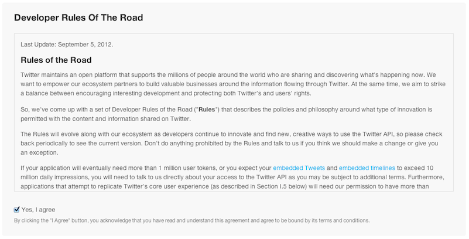
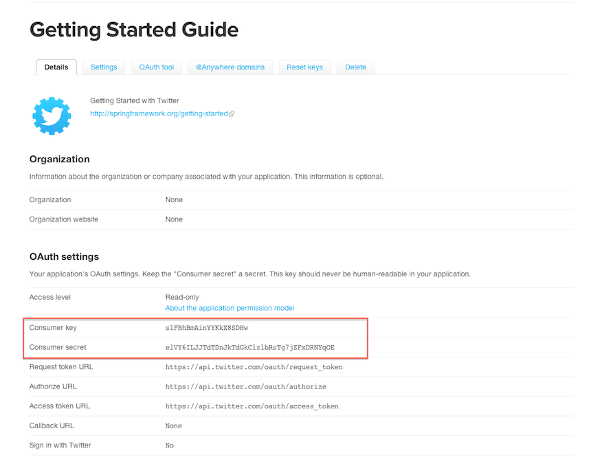
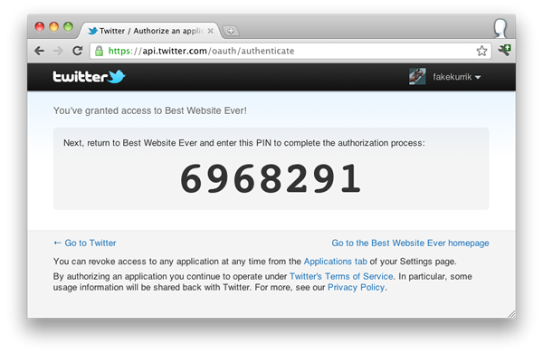

Setup Twitter authorized access¶
SocialEcho Twitter Consumer needs to make authorized calls to Twitter’s APIs. But first Twitter needs to indentify your SocialEcho instance as an application.
This guide walks you through the steps of registering an application that you can use to integrate your SocialEcho instance with Twitter.
Registering a new application at Twitter¶
All Twitter users are potentially Twitter application developers. Simply visit http://dev.twitter.com and sign in with your Twitter credentials.
From http://dev.twitter.com, find your avatar in the upper-right corner and move your mouse over it. You see a menu that includes (among other things) “My applications”. Select “My applications” to see a page that will list all your Twitter applications, once you create them. You haven’t created any applications yet, so the list is empty.
Click the “Create a new application ” button near the top. A new page with the Create an application form requires basic information about your application.

Fields Name, Description and Website are mandatory. Fill them as you please.
Twitter demands attention to handle tweets. The developer Rules Of The Road section outlines rules you must agree to follow. It is recommended that you read these rules closely to make sure you don’t violate them.
If you agree to the rules, check “Yes, I agree”.
A Captcha challenge ensures that you’re not setting up applications through an automated process.

Click “Create your Twitter application” to complete the form and go to the application settings page.
Here you have all the details about your application. The main fields to note are Consumer key and Consumer secret. These values are your application’s credentials for Twitter and thats what you will use to obtain access tokens.
Take note of these keys. Now you have them you are ready to obtain access tokens.
Obtaining Twitter access tokens¶
There are many ways to obtain such tokens, in our case we will use Twitter’s PIN-based authorization <https://dev.twitter.com/docs/auth/pin-based-authorization>.
To obtain the tokens for you instance please go to socialbus-twitter-oauth at your base dir:
> cd socialbus-twitter-oauth
And finally run:
> ./socialbus-twitter-oauth.sh
You will see the following output:
This program will help you through the process of generating Twitter user token.
Before start you must have.
1) Twitter user account. Signup at https://twitter.com
2) Twitter application key. Register yours at https://dev.twitter.com/apps.
3) Once you have registered your application please follow the instructions:
1) Enter the application consumer key:
It will asks for you Consumer key and Consumer secret. Inform the keys you obtained when you registered you application above. After inform Consumer key and Consumer secret it will present you an url. Open the url on your browser and authorize the app. After authorize it Twitter will inform you a PIN.
Copy it and paste it at your console and press ENTER. The tokens will be stored in a file called tokens.csv at your current directory.
You should now have a tokens.csv file similar to this:
<token>,<token-secret>,<consumer-key>,<consumer-secret>
You don’t have to worry with its content. You are ready to inform it when running socialbus-twitter-consumer.
Next¶
Now you have a file with valid token go to Configuring Twitter Consumer.